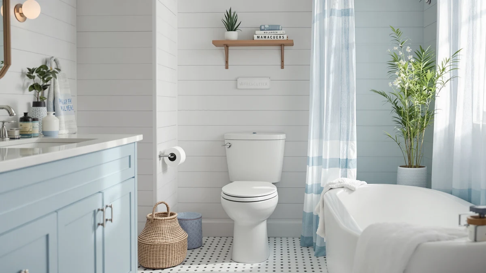

American Standard 2851A104.020 Town Square S One-Piece Toilet Review (2026): Worth It?
Prices and picks verified as of November 2026. Independent, reader-supported reviews.


Quick Answer
The American Standard 2851A104.020 Town Square S one-piece toilet delivers traditional, collection-matched styling, but at $848.90 it costs more than every alternative in this comparison. It earns the price if matching fixtures across a full bathroom remodel matters to you; otherwise the Kohler Santa Rosa below saves you $172 without giving up core function.
Our pick: American Standard 2851A104.020 Town Square, $848.90 Check Price on Amazon
Bottom line: our top pick is the American Standard 2851A104.020 Town Square S One-Piece Toilet at $848.90.
Things to Know Before You Buy
- The Town Square S is a one-piece toilet, meaning the tank and bowl form a single ceramic shell with no seam for grime to collect, unlike a two-piece model.
- At $848.90, it's the most expensive toilet in this comparison, costing more than the MEJE wall-hung smart toilet ($811.30), the TOTO Aquia IV ($693.90) and the Kohler Santa Rosa ($676.52).
- Its crown molding details are designed to coordinate with the rest of American Standard's Town Square S Bathroom Collection, including sinks and faucets.
- Amazon's listing doesn't show a public star rating or review count for this ASIN, so we can't cite one here, and a missing rating is not the same as a zero rating.
- If you want bidet functions or wall-hung space savings, the MEJE alternative below covers those; if a lower price with a strong flush matters more, the Kohler and TOTO picks are worth comparing first.
This American Standard 2851A104.020 Town Square S one-piece toilet review exists because the model keeps surfacing in traditional-style toilet searches without much independent coverage to justify its price tag. At $848.90, it costs more than most one-piece toilets we track in this category, so what buyers really want to know is whether the traditional styling and one-piece construction earn that premium. We went through the manufacturer's spec sheet, the current Amazon price and the broader market for one-piece toilets in this price range to answer it. This review is based entirely on what American Standard publishes about the toilet, current pricing and the patterns in verified owner reviews for each of the three alternatives we compared it against.
The short version: the Town Square S is a solid pick if you specifically want traditional crown-molding styling that matches American Standard's broader Town Square S Bathroom Collection, and you're willing to pay more for that cohesive look than a plainer one-piece toilet would cost. If price matters more than matching your sink and faucet, the Kohler Santa Rosa and TOTO Aquia IV below cost $172 and $155 less, respectively, and the MEJE wall-hung model adds bidet functions the Town Square S doesn't have.
Why You Should Trust Us
Ilane Tall researches bathroom fixtures for Best One Piece Toilets, tracking manufacturer spec sheets, Amazon price movement and patterns across verified owner reviews for one-piece toilets like the Town Square S. This American Standard 2851A104.020 review is built entirely from public manufacturer data, current Amazon pricing and the feedback buyers leave on listing pages.
We do not run a testing lab. This research compares manufacturer data, pricing and owner feedback rather than personal use of the toilet. When American Standard doesn't publish a figure, such as a rough-in distance, or Amazon doesn't show a rating for this ASIN, we say so in this review instead of filling in a number we don't have.
How We Compared
To put together this American Standard 2851A104.020 Town Square S one-piece toilet review, we started with the manufacturer's published specs and feature list, then checked the current Amazon price and cross-referenced it against three other toilets in a similar price band: the MEJE wall-hung smart toilet, the TOTO Aquia IV WASHLET+ and the Kohler Santa Rosa. We looked for patterns in verified owner reviews on each listing, focusing on recurring comments about fit, flush performance and ease of cleaning rather than one-off complaints.
We excluded toilets without a public spec sheet or without enough verified reviews to establish a pattern. Where American Standard doesn't publish a dimension, such as rough-in distance or bowl height, or Amazon doesn't show a review count for this ASIN, we note that the figure is unavailable rather than guessing at it.
Overview & Specs

American Standard 2851A104.020 Town Square
What we like
- One-piece shell removes the seam between tank and bowl where grime collects on two-piece toilets
- Crown molding details coordinate with the rest of the Town Square S Bathroom Collection
- White finish matches the large majority of existing bathroom fixtures
Flaws but not dealbreakers
- At $848.90, it costs more than the Kohler, TOTO and MEJE alternatives in this comparison
- American Standard's listing doesn't publish rough-in or bowl height dimensions, so confirm fit before buying
- No bidet or smart features, unlike the wall-hung MEJE alternative
| Material | — |
| Size | — |
The American Standard 2851A104.020 Town Square S is a one-piece toilet built around the crown molding styling that runs through American Standard's Town Square S Bathroom Collection. Because the tank and bowl form a single ceramic piece, there's no seam at the base where the two components meet on a standard two-piece toilet, the detail owners researching one-piece designs usually cite as the main cleaning advantage. The toilet ships in white, the finish that matches the largest share of existing bathroom fixtures in the US market, and American Standard markets it as a coordinated piece rather than a standalone fixture.
On price, the Town Square S sits at the top of this comparison. That $848.90 premium buys matching design language with American Standard's sinks and faucets in the same collection, which matters most to buyers doing a full bathroom remodel rather than a single-fixture swap. It doesn't buy smart features: unlike the MEJE wall-hung model below, there's no bidet function, heated seat or remote control. American Standard's listing doesn't publish a rough-in distance or bowl height, so measure your existing rough-in before ordering rather than assuming a universal fit. Amazon doesn't show a public star rating or review count for this ASIN either, so we can't cite one here.
What We Liked
The biggest strength of this American Standard Town Square S one-piece toilet is the one-piece construction itself. Removing the seam between tank and bowl eliminates a hard-to-reach joint that collects grime on two-piece toilets like the TOTO Aquia IV, and that design choice alone is why one-piece models keep showing up in traditional-bathroom shopping lists.
We also like that American Standard built this toilet as part of a coordinated collection rather than a one-off fixture. The crown molding detailing on the tank lid and base matches the Town Square S sinks and faucets, so a full bathroom remodel can pull fixtures from one line instead of mixing finishes and styles from different manufacturers.
The white finish is a practical plus too. It's the color that matches the largest share of existing toilets, tubs and tile in US bathrooms, which keeps this upgrade from forcing a repaint or retile just to match a new fixture.
What Could Be Better
Price is the clearest drawback of this American Standard one-piece toilet: at $848.90, it costs $172 more than the Kohler Santa Rosa and $155 more than the TOTO Aquia IV in this comparison, and neither of those alternatives gives up much in day-to-day function.
American Standard's own listing doesn't publish a rough-in distance or bowl height for this model, which makes it harder to confirm fit before buying compared with manufacturers that list every dimension upfront. Amazon also doesn't show a public star rating or review count for this ASIN, so we can't point to a review-based track record the way we can for some of the alternatives.
If you want built-in bidet functions, heated seating or remote-controlled flushing, this isn't that toilet. The MEJE wall-hung model below covers that ground; the Town Square S is a traditional fixture, not a smart one.
Who Is It For?
This American Standard 2851A104.020 Town Square S one-piece toilet is the right pick for homeowners who are remodeling a full bathroom and want fixtures that visibly match: the crown molding detailing coordinates with the rest of the Town Square S Bathroom Collection, so sinks, faucets and the toilet can come from one design line. It also suits anyone who prioritizes a seamless, easy-to-clean one-piece shell over a two-piece toilet's lower sticker price.
It's a weaker fit if your main goal is to spend less: the Kohler Santa Rosa and TOTO Aquia IV both undercut it by well over $100 without sacrificing core function. It's also not the choice for anyone who wants bidet or smart-toilet features, since the MEJE alternative below covers that need and this one doesn't.
Alternatives to Consider
If the Town Square S doesn't fit your budget or your feature list, these three alternatives came up most often in our research into one-piece and two-piece toilets in the same price range.

Also Great
MEJE #T010G - Wall Hung
A wall-hung smart toilet with a built-in bidet, heated seat and foot-sensor controls, for buyers who want space savings and smart features over traditional styling.
$811.30
Check Price on Amazon
Also Great
TOTO Aquia IV WASHLET+ Two-Piece
A two-piece WASHLET+-ready toilet with a 360-degree tornado flush and a glaze that resists waste buildup, priced $155 below the Town Square S.
$693.90
Check Price on Amazon
Best Value
Kohler 30811-96 Santa Rosa One-Piece
A one-piece toilet with Comfort Height seating at $676.52, the cheapest option in this comparison by $172.
$676.52
Check Price on AmazonFrequently Asked Questions
Is the American Standard 2851A104.020 Town Square S worth $848.90?
For buyers who specifically want a traditional one-piece toilet that matches American Standard's Town Square S Bathroom Collection, yes. The crown molding details and seamless one-piece shell justify a premium over a plain two-piece toilet. Shoppers focused purely on price have cheaper options, including the Kohler Santa Rosa at $676.52.
How does a one-piece toilet like the Town Square S compare to a two-piece model?
A one-piece toilet fuses the tank and bowl into a single ceramic shell, which removes the seam where grime collects on two-piece models such as the TOTO Aquia IV WASHLET+. Owners researching both styles consistently point to easier cleaning as the main advantage, weighed against the Aquia IV's lower price.
Does the Town Square S match other bathroom fixtures?
Yes. American Standard designed the 2851A104.020 to coordinate with the rest of its Town Square S Bathroom Collection, including sinks and faucets that share the same crown-molding-inspired profile, so buyers remodeling a full bathroom can match fixtures across the room.
Final Verdict
This American Standard 2851A104.020 Town Square S one-piece toilet review comes down to a straightforward trade-off. American Standard's one-piece toilet delivers traditional, collection-matched styling at $848.90, the highest price among the four models we compared, without a public star rating or review count to confirm a long track record. If matching the rest of a Town Square S bathroom suite matters to you, this American Standard model is worth the premium. Buyers who'd rather save over $150 should look at the Kohler Santa Rosa or TOTO Aquia IV above, and anyone who wants bidet functions should go with the MEJE wall-hung model instead.